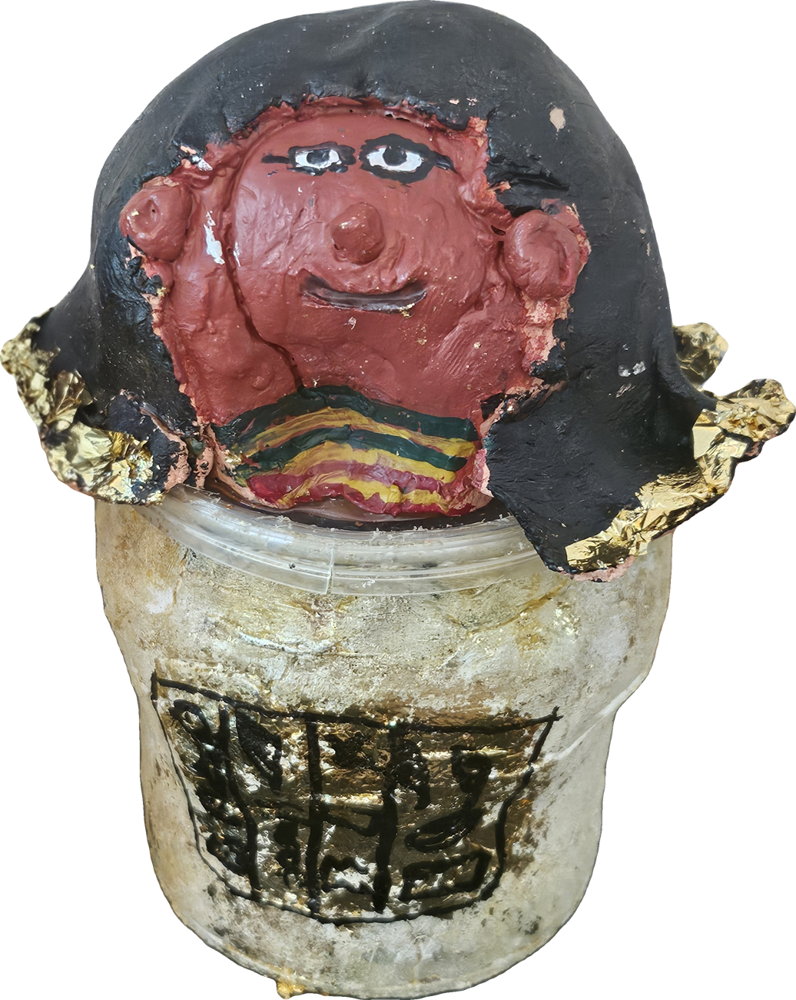
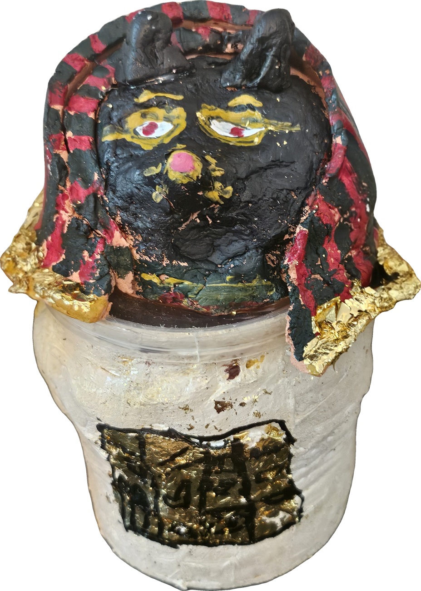
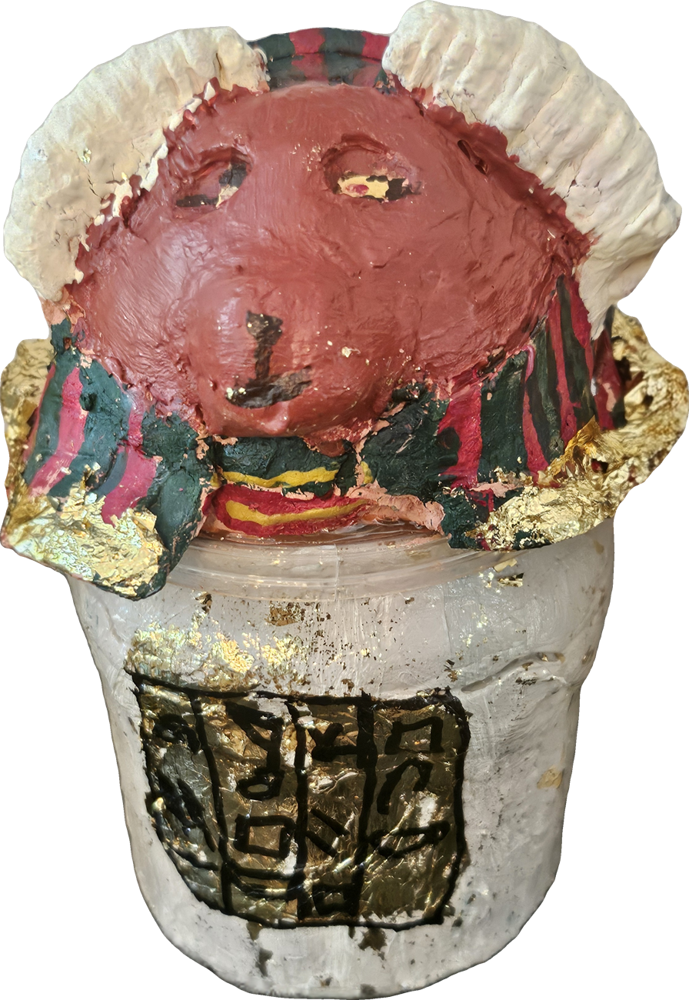
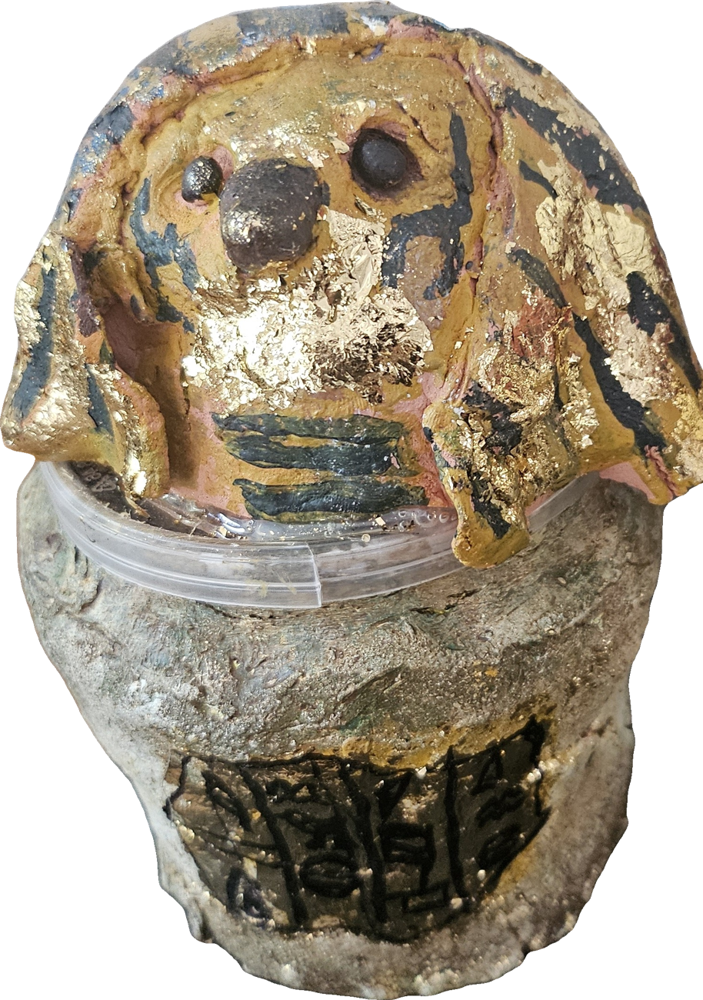

Introduction
Ancient Egyptian canopic jars were specialized vessels used during mummification to store the liver, lungs, stomach, and intestines. Guarded by the Four Sons of Horus, they evolved from simple stone blocks to beautifully carved works of art.
The Four Sons of Horus
Each jar was protected by one of the Four Sons of Horus, who guarded a different organ and faced a different direction:
- Imsety — human-headed god guarding the liver (South).
- Hapi — baboon-headed god guarding the lungs (North).
- Duamutef — jackal-headed god guarding the stomach (East).
- Qebehsenuef — falcon-headed god guarding the intestines (West).
Did You Know? It Was Named After the Wrong Place
The word "canopic" comes from an embarrassing mistake by early European experts. They noticed the jars looked similar to pots worshipped in a town in Egypt called Canopus. Even after realizing the mistake, the name stuck!
Gallery




References
- Source one — author, title, year.
- Source two — author, title, year.
- Source three — author, title, year.